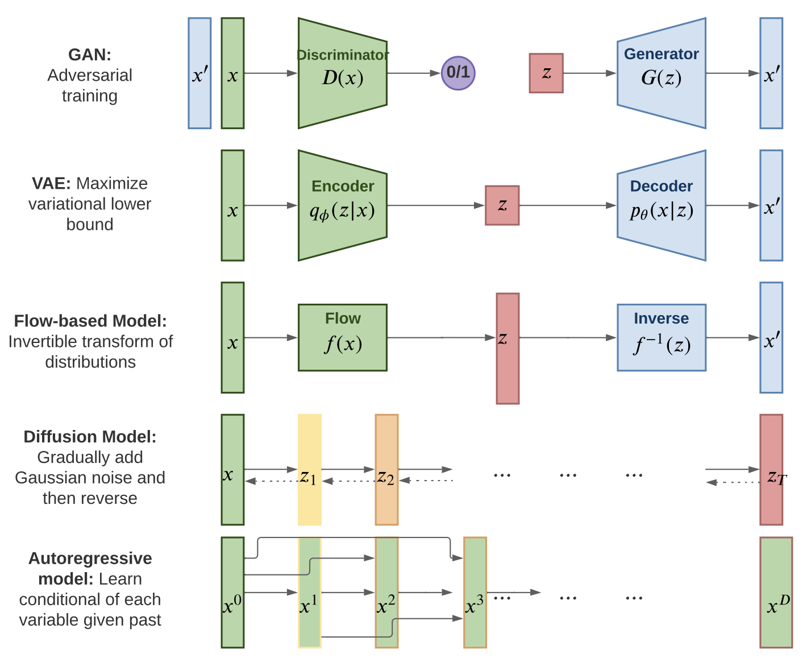
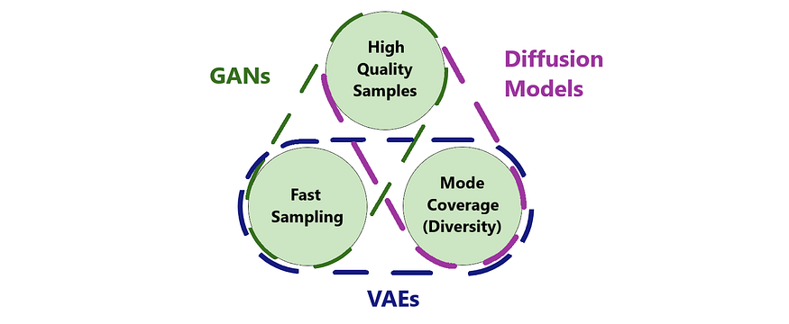

Generative Models
Discriminative vs. Generative Approaches
In machine learning, we can distinguish between two fundamental modeling paradigms:
Discriminative models focus on learning the conditional distribution \(p(y|x)\) or decision boundaries directly. Given an input \(x\), they predict the output \(y\) without modeling how the data itself is generated. Examples include most neural network classifiers, which learn to map inputs to labels efficiently.
Generative models learn the data distribution \(p(x)\) itself or the conditional distribution \(p(x|y)\). Rather than drawing a decision boundary, they model how the data itself is generated — enabling them to synthesize new samples, fill in missing information, or evaluate likelihoods of observations.
The Generative Modeling Problem
Problem Statement: Given a dataset of images \(\mathcal{D} = \{x_1, \ldots, x_N\}\) drawn from an unknown distribution \(p_{\text{data}}(x)\), learn a model \(p_\theta(x)\) that approximates this distribution.
Learning such a distribution can be useful to:
- Sample new images: \(x_{\text{new}} \sim p_\theta(x)\)
- Evaluate likelihood: Compute \(p_\theta(x)\) for a given \(x\)
- Learn representations: Extract meaningful latent structure
Extended Formulations:
- Unconditional: \(p(x)\) — generate any image from learned distribution
- Conditional: \(p(x \mid y)\) — generate image of class \(y\)
- Latent variable: \(p(x \mid z)\) where \(z \sim p(z)\) — generate from learned latent space
- Noisy conditional: \(p(x \mid y, \xi)\) where \(\xi\) is random noise
Before delving into architectures, it’s worth understanding why modeling data distributions is useful; and why generative models are central to many AI application.
Why Generative Models Matter
Key motivations:
- Data synthesis: Generate realistic data to augment training sets or handle scarce/imbalanced classes.
- Representation learning: Learn meaningful latent spaces that transfer across tasks — the foundation of self-supervised pretraining.
- Likelihood modeling: Estimate \(p_\theta(x)\) for anomaly or out-of-distribution detection, compression, or uncertainty estimation.
- Creative generation: Produce new visual content, designs, or scenes under controllable conditions — the core of text-to-image, video, and 3D generation systems.
In practice, generative modeling bridges analysis (understanding data) and creation (producing data) — a capability increasingly central to applied machine learning.
Classical Example: Gaussian Mixture Models (GMMs)
GMMs illustrate core generative modeling ideas — latent variables, probabilistic assignments, and EM-style learning — which underpin modern neural generative models.
Setup: Model data as a mixture of \(K\) Gaussian components:
\[p(x) = \sum_{k=1}^K \pi_k \cdot \mathcal{N}(x \mid \mu_k, \Sigma_k)\]
- \(\pi_k\) = mixing coefficients (\(\sum_k \pi_k = 1\))
- \(\mu_k\) = mean vector of cluster \(k\)
- \(\Sigma_k\) = covariance matrix of cluster \(k\)
Each point \(x_i\) has an unobserved cluster assignment \(z_i\):
\[p(z_i = k) = \pi_k, \quad p(x_i \mid z_i = k) = \mathcal{N}(x_i \mid \mu_k, \Sigma_k)\]
Objective: Maximize log-likelihood:
\[\mathcal{L}(\theta) = \sum_{i=1}^N \log \sum_{k=1}^K \pi_k \, \mathcal{N}(x_i \mid \mu_k, \Sigma_k)\]
EM Algorithm (soft cluster assignments):
Generative Process:
GMMs generalize K-means by using soft probabilistic assignments and flexible cluster shapes.
Connection to Neural Generative Models
GMMs teach the key concepts of latent structure and probabilistic inference that scale to modern neural generative models, which generalize them with the following modifications:
- Latent variables → continuous latent codes in VAEs/GANs
- Posterior inference → encoder networks (amortized inference in VAEs)
- EM-style learning → alternating inference and generative updates (encoder + decoder)
- Likelihood-based learning → ELBO maximization in VAEs
Limitation: GMMs do not scale to high-dimensional images due to
- parameter explosion (Covariance matrix is \(O(d^2)\) parameters, d the number of image pixels)
- lack of spatial structure exploitation — solved via convolutions and latent representations.
Chapter Roadmap
Deep Learning Generative Models — different approaches are shown in Figure 1:

From this taxonomy (Figure 1), we focus on three major families:
7.1: Variational Autoencoders (VAEs)
- Latent variable models with learned encoders/decoders
- Variational inference and the evidence lower bound (ELBO)
- Applications: Disentangled representations, controllable generation
§7.2: Generative Adversarial Networks (GANs)
- Adversarial training framework: Generator vs. Discriminator
- StyleGAN architecture and latent space manipulation; conditional GANs
- Applications: High-fidelity image synthesis, style transfer
§7.3: Diffusion Models
- Denoising diffusion probabilistic models (DDPMs)
- Latent diffusion (Stable Diffusion architecture)
- Applications: Text-to-image generation, video generation, impainting
These three paradigms are often compared in terms of a trade-off known as the generative trilemma.
This concept suggests that a generative model can typically only satisfy two of the following three desirable properties: high-quality samples, high diversity (mode coverage), and fast sampling speed. The choice between VAEs, GANs, and Diffusion Models often depends on which of these aspects is prioritized for a given application. This trade-off is summarized in the following diagram (Figure 2):

Note on Coverage: Autoregressive models introduced in §6.6 (Self-Supervised Learning) under masked prediction objectives and are not revisited here (TODO: Overview of the classical work of PixelCNN, PixelRNN, or recent approches such as MaskGIT). Normalizing Flows, while theoretically elegant, have been largely superseded by diffusion models in practice and are mentioned only briefly.